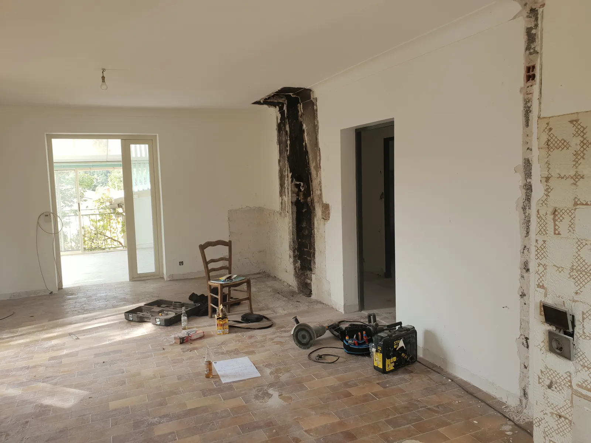

Rénovation & mise aux normes
Beaucoup de maisons de la Drôme provençale ont une installation qui date de quarante ans.
Fils sous tissu, absence de prise de terre, fusibles à cartouche, tableau saturé de rallonges : ce sont les causes les plus fréquentes d'incendie d'origine électrique. Dans le bâti ancien de la région, je les rencontre régulièrement.
Que ce soit pour votre sécurité, pour vendre, ou pour mettre en location, je remets votre installation au niveau de la norme actuelle — d'un coup ou par étapes, selon votre budget.
Sur le bâti ancien. Pierre, pisé, cloisons anciennes, plafonds à la française : je travaille au cas par cas. On trouve toujours une solution pour passer les câbles sans défigurer la maison — moulures discrètes, passage en combles ou en vide sanitaire, saignées limitées au strict nécessaire.
Ce que je réalise
- Diagnostic complet de l'installation existante, avec compte rendu
- Remplacement de tableau électrique vétuste
- Création de la prise de terre et pose des protections différentielles
- Remplacement du câblage ancien, création des circuits manquants
- Levée de réserves après diagnostic électrique obligatoire (vente ou location)
- Rénovation partielle ou totale, réalisable par étapes
- Remise en sécurité rapide en cas de danger immédiat
Devis gratuit
Décrivez-moi votre besoin. Je vous rappelle dans la journée, et le devis suit sous 48 h par email.
07 81 06 73 79 Formulaire de devisEn images
Des chantiers que j'ai réalisés. Cliquez pour agrandir.
Comment ça se passe
Quatre étapes, pas de surprise.
On se voit sur place
Je passe voir : le tableau, la prise de terre et l'état des circuits. On ne chiffre pas une rénovation sans avoir vu l'existant.
Vous recevez le devis
Sous 48 h, par email en PDF — ou remis en mains propres si vous préférez. Détaillé poste par poste, matériel annoncé. Gratuit et sans engagement.
On planifie
On fixe une date ensemble. Je vous annonce la durée et les éventuelles coupures de courant.
Je réalise
Chantier protégé, nettoyé chaque soir. À la fin, je vous explique l'installation et je fournis les attestations.
Questions fréquentes
Mon installation est-elle aux normes ?
Quelques signes qui ne trompent pas : des fusibles à cartouche plutôt que des disjoncteurs, pas de prise de terre (prises à deux trous sans broche), un seul différentiel voire aucun, des fils dont la gaine est en tissu. Si vous cochez une de ces cases, un diagnostic s'impose. Je le fais gratuitement lors du devis.
Faut-il tout refaire d'un coup ?
Pas forcément. On peut commencer par le plus urgent — le tableau et la mise à la terre — puis reprendre les circuits pièce par pièce sur plusieurs années. Je vous établis un devis global et on découpe en tranches selon votre budget.
Je vends ma maison, le diagnostic est mauvais. Que faire ?
Un diagnostic défavorable n'empêche pas la vente : il informe l'acheteur, qui peut s'en servir pour négocier. Vous avez deux options : lever les anomalies avant la vente pour préserver votre prix, ou vendre en l'état. Je peux chiffrer la levée des réserves point par point pour que vous compariez.
Combien coûte un remplacement de tableau ?
Cela dépend du nombre de circuits à reprendre et de l'état de l'existant. C'est précisément pour ça que je passe voir avant de chiffrer : annoncer un prix au téléphone sans avoir vu l'installation serait malhonnête. Le déplacement et le devis sont gratuits.
Un projet ? Une question ?
Le premier échange ne coûte rien, et vous saurez tout de suite où vous allez.